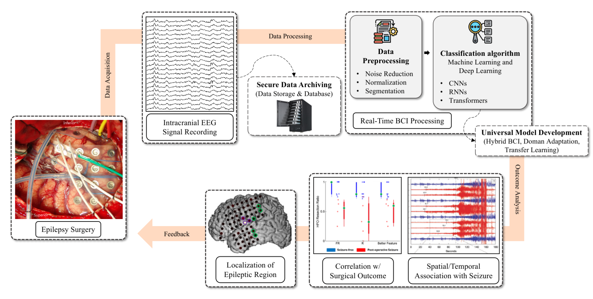
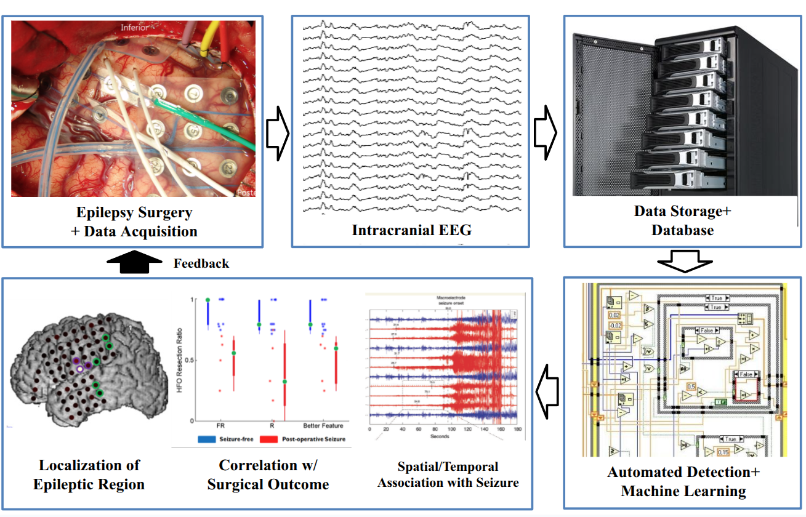

Research project · Clinical NeuroAI
Intracranial EEG analysis for epilepsy research
This project examines deep learning methods for detecting and localizing high-frequency oscillations in intracranial EEG, characterizing seizure dynamics, and studying seizure-onset-zone localization.
Supported by Nazarbayev University Faculty Development Competitive Research Grant · Grant No. 040225FD4727
